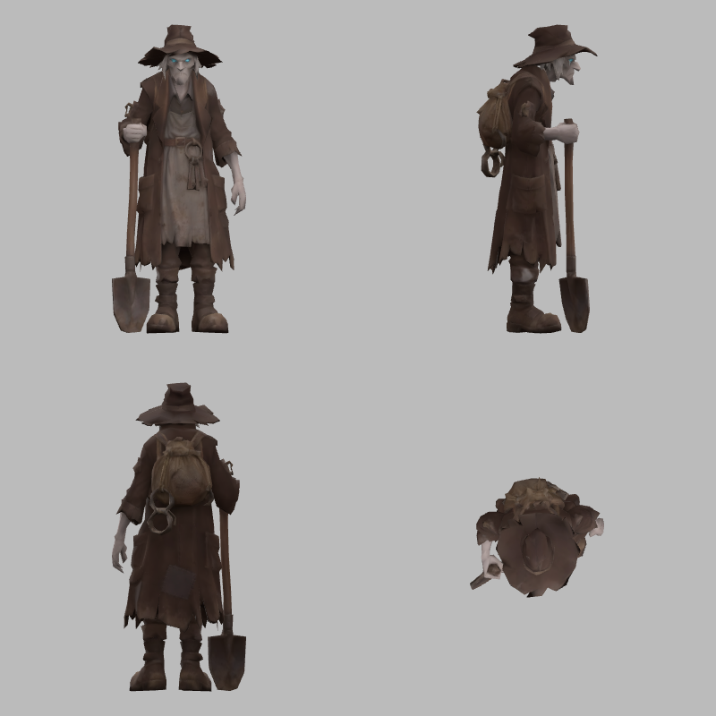

The Ashen Barrow's trapper: your export, with a skeleton and nine moves added by hand. A hunched old gravedigger in a long torn coat and a wide hat, a pack of rope and iron traps on his back, leaning on a spade. It never strikes in person: it keeps its distance, drops to a knee and digs, and a bone snare goes into the floor between you. Step on it once it is armed and the jaws close on you. Press a move to watch it; the numbers under the page come from the model file.
Idle or Walk sets what it does between actions, and Going turns it on the spot. Dig a snare plays the game's dig with the hero stand-in 3.4 u away: the snare goes in 1.8 u toward the hero and arms. The snare springs starts with an armed snare and walks the hero stand-in onto it. An action repeats until you press it again. Hurt plays on top of anything. Death drops it: press it again and it spawns back. The bar names the part of the move that is playing, in the game's own words where it has them.

It came through as one piece: a gaunt grey old man with long white hair, a sour face and glowing cyan eyes under a battered wide-brimmed hat; a long brown coat, torn and patched, over a stained apron with a ring of iron keys at the belt; a sack pack with rope and two iron traps on his back; heavy strapped boots. His right hand grips a spade standing upright on its blade before him; his left arm hangs bare from the elbow.
| Move | What it does | Timing |
|---|---|---|
| Idle | It leans on its spade and breathes, peers one way and then the other under its hat, the fingers of its free hand working; once it lifts the spade a hair and sets it down again. | Mine: a 4.4 s loop. The game's sexton is rarely still. |
| Walk | The game's quick shuffle on short legs, leaning into the travel. The spade is carried tipped forward with its blade off the floor, swinging a little with the step; the free arm swings. | Game: 1.4 u/s. The stride is mine, 0.25 s a step. |
| Turn left, turn right | Shuffles round on the spot, the head leading. | Mine: 180° a second (the game turns it at once). |
| Dig a snare | The game's dig. It drops onto its right knee and the spade comes up; the chop driven in from its right, the chop from its left, then both hands on the shaft for the stamp straight down, the biggest, each throwing grave dirt; on the dig tick the spade's flat pats the earth twice and the snare goes in 1.8 u toward the hero, with a pat of earth and a bone glint. Its eyes brighten through the dig. Then up, and the spade is set back on its blade. The snare's teeth break the ash as it arms and glint indigo once armed. | Game: 36 ticks from the knee to the pat (down 0.12 s, each chop 0.16 s), the pat 0.14 s, up 0.3 s; the snare arms 45 ticks after. |
| The snare springs | The game's spring, with an armed snare already in. The hero stand-in walks onto it: an Ember ring r 0.95 rises round it while the bone teeth climb and lean in, then the jaws snap with an Ember star and bone splinters, and the hero is held with a pale ring at its feet. The sexton leans on its spade and watches, its head coming up as the ring rises, and laughs a hunched laugh at the snap. | Game: the ring 42 ticks, the snap 11 damage, the slow 75 ticks. The walk on and the sexton's watching are mine. |
| Hurt | The head and shoulders jolt back and the free arm flinches; the spade stays planted. Plays on top of any move. | 0.4 s |
| Spawn | Grows in bowed, straightens and sets the spade down on its blade with a puff of dust. | Game: grow in 7 frames, about 10% over. The rest is mine. |
| Death | Struck, it rocks back; its knees give and it sags onto its spade, then topples forward onto its face, the spade going down flat ahead of it with a clank. | Mine: 2.2 s, then it stays down. The game pops every foe where it stands. |
| What was measured, on every frame of every move | Result |
|---|---|
| Planted feet sliding on the floor | 0 mm |
| Loops that jump when they restart (idle, walk, both turns) | 0 |
| Anything into the floor (the spade's blade is held on it) | Up to 0 mm on the walk and turns; up to 0 mm in the dig and the spring; up to 0 mm in the death. |
These numbers come from the model file. I checked the poses as still frames only: the cloud machine cannot play the page at full speed, so the shuffle, the chops and the snap are yours to judge.